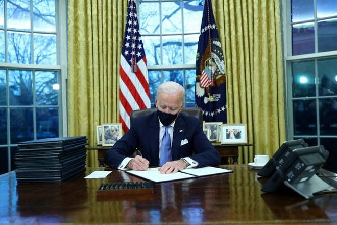

<!DOCTYPE html>
<html>
<head>
	<title>Joe Biden</title>
	<style>
		body{
			display: block;
			font-size: 30px;
			padding: 0px 100px 0px 100px;
		}
		h1{
			color: black;
			font-size: 50px;
		}
		h2{
			color: purple;
			font-size: 15px;
		}
		h3{
			color: blue;
			font-size: 20px;
		}
		
		
	</style>
</head>
<body>

</body>
</html>


<h1>On Day One, Joe Biden targets Trump policies on climate, coronavirus</h1>
<h3>APWASHINGTON, FEBRUARY 2, 2021 06:53 IST<br/>
UPDATED: FEBRUARY 2, 2021 08:27 IST</h3>
<h2>SHARE ARTICLE 5PRINTA A A</h2>
<figure><br/>
<figcaption>U.S. President Joe Biden signs executive orders in the Oval Office of the White House in Washington, after his inauguration as the 46th President of the United States, U.S. on January 20, 2021.   | Photo Credit: Reuters</figcaption>
</figure>


<p>The 15 executive actions amount to an attempt to rewind the last four years of federal policies with striking speed.
President Joe Biden is moving swiftly to dismantle Donald Trump’s legacy on his first day in office, signing a series of executive actions that reverse course on immigration, climate change, racial equity and the handling of the coronavirus pandemic.<br/></p>

<p>The new President signed the orders just hours after taking the oath of office at the Capitol, pivoting quickly from his pared-down inauguration ceremony to enacting his agenda. With the stroke of a pen, Mr. Biden ordered a halt to the construction of Mr. Trump’s U.S.-Mexico border wall, ended the ban on travel from some Muslim-majority countries, declared his intent to rejoin the Paris Climate Accord and the World Health Organisation and revoked the approval of the Keystone XL oil pipeline, aides said.<br/></p>
 
<p>The 15 executive actions amount to an attempt to rewind the last four years of federal policies with striking speed. Only two recent Presidents signed executive actions on their first day in office — and each signed just one. But Mr. Biden, facing the debilitating coronavirus pandemic, a damaged economy and a riven electorate, is intent on demonstrating a sense of urgency and competence that he argues has been missing under his Republican predecessor.<br/></p>

<p>“There’s no time to start like today,” Mr. Biden said in his first comments to reporters as President.<br/></p>

<p>Mr. Biden wore a mask as he signed the orders in the Oval Office — a marked departure from Mr. Trump, who rarely wore a face covering in public and never during events in the Oval Office. But mask wearing is now required in the building. Among the executive actions signed on Wednesday was one putting in place a mask mandate on federal property. Mr. Biden’s order also extended the federal eviction freeze to aid those struggling from the pandemic economic fallout, created a new federal office to coordinate a national response to the virus and restored the White House’s National Security Council directorate for global health security and defense, an office his predecessor had closed.<br/></p>

<p>The actions reflected the new President’s top policy priority — getting a handle on a debilitating pandemic. In his inaugural address, Mr. Biden paused for what he called his first act as President — a moment of a silent prayer for the victims of the nation’s worst public health crisis in more than a century.<br/></p>

<p>He declared that he would “press forward with speed and urgency” in coming weeks. “For we have much to do in this winter of peril and significant possibilities — much to repair, much to restore, much to heal, much to build and much to gain,” he said in the speech.<br/></p>

<p>But Mr. Biden’s blitz of executive actions went beyond the pandemic. He targeted Mr. Trump’s environmental record, calling for a review of all regulations and executive actions that are deemed damaging to the environment or public health, aides said on Tuesday as they previewed the moves. Another order instructs federal agencies to prioritise racial equity and review policies that reinforce systemic racism. Mr. Biden also revoked a Trump order that sought to exclude non-citizens from the census and ordered federal employees to take an ethics pledge that commits them to upholding the independence of the Justice Department.<br/></p>

<p>Aides said he also revoked the just-issued report of Mr. Trump’s “1776 Commission” that promotes “patriotic education.”<br/></p>

<p>Those moves and others will be followed by dozens more in the next 10 days, the President’s aides said, as Mr. Biden looks to redirect the country without having to go through a Senate that Democrats control by the narrowest margin and will soon turn to Mr. Trump’s impeachment trial.<br/></p>

<p>Republicans signalled that Mr. Biden will face fierce opposition on some parts of his agenda.<br/></p>

<p>One of his orders seeks to fortify the Deferred Action for Childhood Arrivals, known as DACA, a signature effort of the Obama administration that provided hundreds of thousands of young immigrants protection from deportation and a pathway to citizenship. That’s part of a broader immigration plan that would provide an eight-year path to citizenship for an estimated 11 million people living in the U.S. without legal status.<br/></p>
 
<p>The plan would lead to “a permanent cycle of illegal immigration and amnesty that would hurt hard-working Americans and the millions of legal immigrants working their way through the legal immigration process,” said Chris Hartline, a spokesperson for the National Republican Senatorial Committee.<br/></p>

<p>Even that familiar criticism seemed a return to the normalcy Mr. Biden has promised after years of disruptive and overheated politics. Mr. Biden’s first day in the White House was a celebration of Washington traditions. He attended church with both Democratic and Republican leaders of Congress.<br/></p>

<p>In another effort to signal a return to pre-Trump times, Jen Psaki, the new White House press secretary, said she would hold a news briefing late on Wednesday in a symbol of the administration’s commitment to transparency. Mr. Trump’s White House had all but abandoned the practice of briefing reporters daily.<br/></p>

<p>Mr. Biden’s action notably did not include immediate steps to rejoin the Iran nuclear accord, which Mr. Trump abandoned and Mr. Biden has pledged to reimplement. Ms. Psaki noted that more actions were coming, including plans to revoke the Pentagon’s ban on military service by transgender Americans as well as the so-called Mexico City policy, which bans U.S. funding for international organizations that perform or refer women for abortion services.<br/></p>